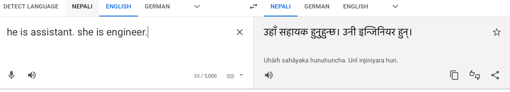
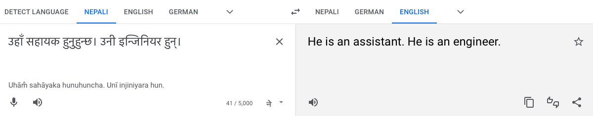
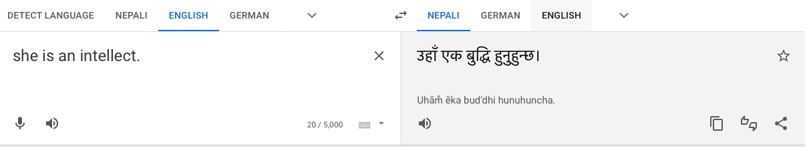
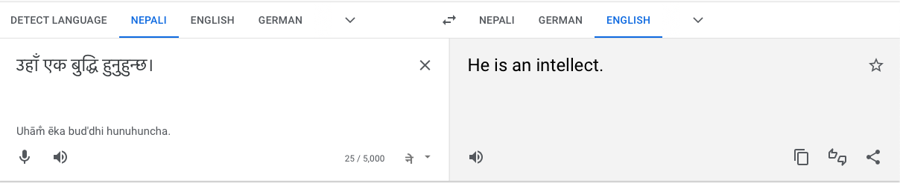
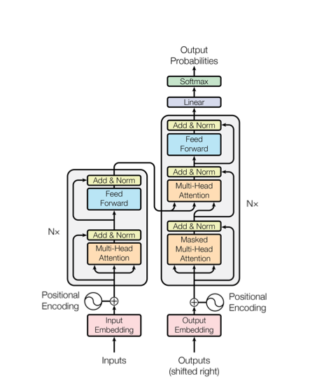

Fairness is being equally lenient towards individuals or groups in the decision-making process.
Today, machine learning models are used widely and for critical tasks.
It decides who gets hired. It tells who pays more for the insurance or the products based on their features.
Also, it outputs the students who get accepted by the University. Law enforcement also uses it to determine who
gets bailed.
A famous example is COMPAS. The model was biased toward African-Americans based on a few parameters, such as
their neighborhood.
Based on their criticality these models should not incorporate bias based on any attribute for the given input
parameter.
The biases could be in the training data which is then, reflected in the outcome (prediction, classification
etc.), or in the algorithm. Although these biases can be found in many models, we are focusing on the language
models, and specifically language translation models.
Bias in language models
Primarily, these language models
are trained on large datasets based on the text from the internet.
For example, GPT2 is prepared on Reddit and new sites.
GPT3 is trained in Reddit, Wikipedia, news sites, and a collection of books.
GPT-2 was trained in 272K documents from unreliable news sites and 63K from banned subreddits.
Models that are trained on these datasets amplify its harm.
As the datasets do not represent all the demographics, they seem to be biased towards marginalized groups,
consisting
of abusive language and bias in gender, race, ethnicity, and disability status.
These transformer models integrate structures from the training data set according to the probability without
considering the meaning.
This is also depicted in the Google's Neural Machine Translation model. While using the translation for the
english-nepali
model, there seems a clear gender bias in the model.


Here, even with the female pronoun for "engineer", the translated result returns "he" for engineer in the
result.


Similarly, "she" is translated to "he" for the adjective "intellect."
Along with the change in pronoun, for most of the translations from English to Nepali regarding the profession,
"he" is translated to "उहाँ," which is
the highest order of respect in the language. But, for "she," it is mostly solved to the mid-order of respect "उनी".
mBART
“The degree to which a human can understand the cause of the decision.”
Using explainable AI, we can understand the model behavior. It assists in the interpretability and understandability of ML models.
To check the understandability of the language models, we use mBART , the multi-lingual neural machine translator model. It is a multi-lingual sequence-to-sequence (Seq2Seq) denoising auto-encoder. mBART is trained by applying the BART to large-scale monolingual corpora across many languages. It has good performance gain, even for the less resource language pairs such as Nepali-English (9.5 Bleu gain)
It includes 12 layers of encoders and 12 layers of decoders, and 16 attention heads.
Transformers
Before we start playing around with our explainable, let's understand the Transformers model, as mBART is based on the Transformers
architecture. It includes multiple encoders and decoders layers, each consisting of a multi-head attention layer and feed-forward neural network. The word embeddings from the inputs are the input for encoders. First, self-attention is calculated for every word, which checks the word with the tokens, i.e., every other word of the input sentence and itself. Which enables the word to understand the context,
depending on different terms. For example, in a sentence, The table is big and made of wood.
It gives an understanding of the word on the table. It is calculated by converting the input to smaller vector query, value, and keys. And here, the query is the word it, and keys are every other word, and they are multiplied with each other.
Then, the outcome is divided by 8 for stable gradient and normalized using softmax.
We will see how it could visualize how the model works.
Then it is multiplied with value to still focus on what we were processing; then, they are
summed up and fed to FFN. The paper presents multi-headed attention, which means the
same process of self-attention is calculated multiple times; this improves the models.
From FFN, the result is passed to every layer of the decoder.
Here, the process is repeated. In the decoder, masking is used for predicting the next word.
The word representations for these vectors are done by the Linear layer, which is fully connected to nn and Softmax.

Transformers architecture depicted in "attention is all we need" paper
Attentions Visualization
Now let's visualize the softmax output for each attention head and layer.
We use mBART trained in English for the encoders and Nepali corpus for the decoders.
Here, for the selected attention heads and the layer, we show the weight distribution of the relation
between the source and the translated language by mBART. It represents which words are considered for
the translation of the particular words. The more visible lines between the words mean a more substantial
relationship between English and translated Nepali words. In contrast, the less visible lines refer to fewer dependencies among the words.
The attention heads on the left aid to filter the attention lines in the diagram. Likewise, the layer selection filters
the result according to the specified layer in the model.
Layer:
Heads:
Here, for layer 10 it seems that "she" has a stronger relationship with "nurse" than "doctor," although the context is
the opposite. This visualization shows the bias in the contextual word embeddings used for the
translation models.
In the following visualization, the heatmap/ probability distribution of the output from the softmax is represented
for selected source (English) tokens. In addition, the visualization shows the strength of the relation between the source/input and
the translated words based upon the selected Layer and Attention head.
Layer:
Attention:
English
Nepali
In layer 3, attention 4, the highest probability for "she" is "doctor." But for most of the other layers, the likelihood is
higher for "nurse" for the word "she" during translation.
The following visualization shows strength of attentions given to the words during translation through the size of the circle. The radius of the circles is based on the
softmax output. The visualization lets us see which terms are considered for the
output. In addition, the visualization also shows the softmax output displayed within the circles.
The visualization is based on the selected layer and attention.
Layer:
Attention:
In layer 11, attention 3, the distributed circle shows greater attention portrayed with the size of the circle and value for the word "nurse" in Nepali for the word "she" in Nepali.
But, in other cases, "she" has a higher probability for a doctor.
Bias in word embeddings
In the above visualizations, we used a contextual language model, which uses the context of the input
to determine the output. It showed the gender bias in different layers and attention heads. Let's use the language model, which uses the static vector representation, to see the bias in the word embeddings. For this, we used word2vec to generate the vectorized form of the words. The word2vec model is trained on the google-news corpus.
In the following visualization, we check the gender bias in words representing adjectives and professions.
To do so, terms/words meaning females and males, such as he, she, her, his, etc., are vectorized and averaged, and using the cosine similarity, the distance between the words and gender is calculated. The male is represented on the x-axis, while the female is on the y-axis. Hence, the words having a higher y value show that they are more related to the female gender in the word embeddings. Likewise, a higher x value indicates that the words are closer to the male gender.
In the above scatter-plot visualization, we could see the words nurse, elegant, shy, and ugly are higher on
the y-axis and lower on the x-axis, which shows that they are more related to the word "she." Likewise, the word such
as leader has a lower value for "she" and higher for "he."
Using the similar method as above, we are calculating, the similarity between the same adjectives and professions
for the nepali word embeddings using word2vec trained on Nepali text corpus .
Similar bias as the English word embeddings could also be found for Nepali word embeddings. Here the words
in Nepali referring to good-looking, shy, nurse, and designer have a higher value on the y-axis than on the x-axis,
representing bias towards the female gender. In contrast, words like doctor and ruler have higher values on the x-axis.
We could see the gender bias in the word representation in the language models and contextual models.
Let us check the bias represented by the language model relative to the stats in the real world.
We use contextual language model roberta-base for masking the gender-representative word in the sentence. For example, we check
the probability for pronouns in sentences that include "nurse" and "doctor." The sentence we used are
"<> is a nurse" and "<> is a doctor". Then, taking the probability for the words "she" and "he," we compare the
number of nurses and doctors in the real world for male and female genders. For this example, we only consider the
total number of nurses and doctors based on gender in the US population.
For the nurse, both models and the real world have a higher value for females than males. Even though the model predicts a higher
value for males in the case of the doctor, there are more female doctors in the real world than male doctors. Here, we need to be
careful with the representation because we are using the real word data of the US only.
Conclusion
We have now utilized various interactive techniques to visualize the bias in the language models by using both contextual and static word embedding. Gender bias is incorporated in the language models. How do we fix this issue?
As the model learns from the training data, it is recommended to prioritize documentation regarding the training corpus used in the language models. Similarly, there are various debiasing techniques to solve these issues. One is to use gender-neutral words, and another is detecting the faulty training document and removing it from the trianing corpus. Even though this debiasing technique helps decrease the bias, the leading problem in the language model remains as they are learning from the training data without understanding the meaning.